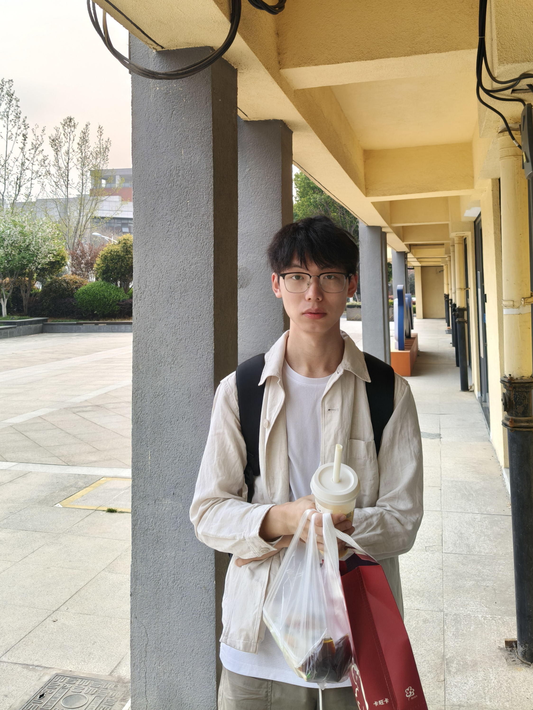

Rethinking Procedural Audio Pre-training: Source Scaling and Objective Adaptation
Self-supervised audio representation learning with FormulaBank: investigating formula-class coverage, rendering diversity, and source-aware masking.
World Models · Embodied Intelligence
彭佳俊
I am a Data Science undergraduate at the University of Science and Technology of China (USTC), in the School of Artificial Intelligence and Data Science.
My research interests center on world models and embodied intelligence, with an interest in vision-language-action models and spatial intelligence. I study how agents build predictive models of the world and use them to perceive, plan, and act.

Honored to receive the National Scholarship of China.
Our Destination Support Restoration preprint is available on arXiv; submitted to ICRA 2027.
Our procedural audio pre-training preprint is available on arXiv; submitted to ICASSP 2027.
Started summer research at HKUST on real-time egocentric video generation and physically plausible hand-object interactions.
* Equal contribution. Both papers are preprints currently submitted for review.
Self-supervised audio representation learning with FormulaBank: investigating formula-class coverage, rendering diversity, and source-aware masking.
Multimodal pedestrian trajectory prediction: restoring destination support in a fixed set of predicted trajectories without retraining the predictor or increasing the hypothesis count.
Predictive representations and learned dynamics for modeling, imagining, and interacting with environments.
Connecting perception, reasoning, planning, and action, with VLA models and spatial intelligence.
Summer research at the Hong Kong University of Science and Technology, focused on real-time egocentric video generation and physically plausible hand-object interactions. Studying VLA, WAM, and JEPA architectures alongside this work.
Investigated self-supervised pre-training with procedural audio, conducting the main experiments across five downstream tasks and analyzing formula-class coverage and rendering diversity. Compared source-dependent masking with a matched AudioSet control, and contributed model training, analysis, figures, and manuscript writing.
Contributed to destination support restoration for finite-set multimodal pedestrian trajectory prediction, focusing on restoring destination coverage without retraining the predictor or increasing the number of candidate trajectories. Designed research figures and contributed to manuscript writing.
Sep 2024 – Jun 2028 (expected)
School of Artificial Intelligence and Data Science
B.S. in Data Science · Undergraduate
CET-4: 598 / 710 CET-6: 596 / 710
Led delivery of a React/Vite and Django REST application with SQLite3, JWT authentication, issue tracking, and API-assisted classification. Awarded Second Prize in USTC's 3rd Yuqing Cup; resulted in one software copyright registration.
Prepared defect datasets, trained YOLOv8/RT-DETR detectors, and built a FastAPI backend and web visualization with LLM analysis and retrieval-augmented recommendations. Awarded Second Prize in the Challenge Cup AI+ Track.
Reading paths and technical notes on WAM/VLA, embodied AI and reinforcement learning, video generation, and developer tools.